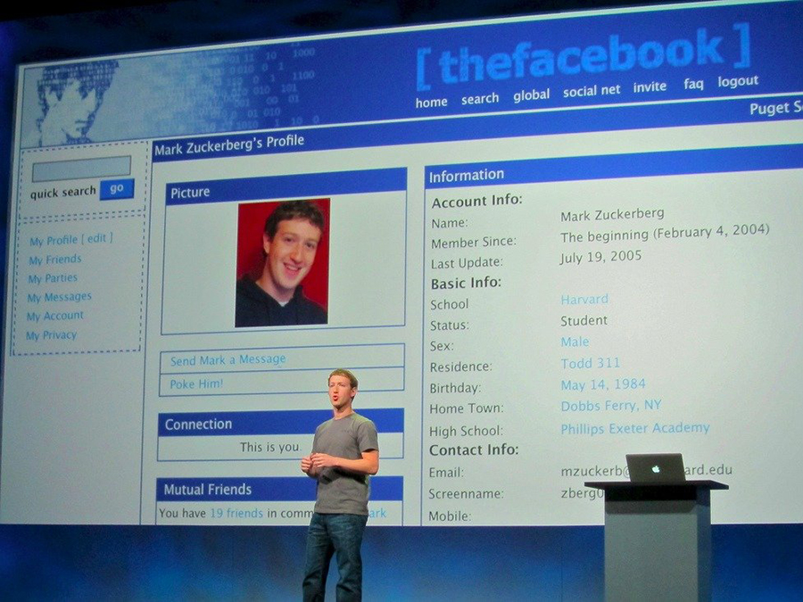
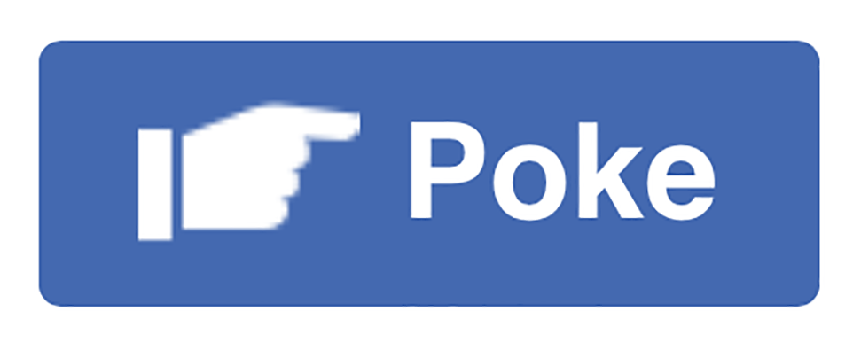

Who made the Poke Feature and Why?
"When we created the poke, we thought it would be cool to have a feature without any specific purpose," - Facebook

Mark Zuckerberg added the facebook poke feature on “The facebook”in 2004. When a little website called TheFacebook.com launched in 2004, there were very few bells and whistles. But there was one very beloved feature — a button to "Poke" other users. The poke didn't come with any explanation or rules. Zuckerberg, then 23, said he just wanted to make something with no real purpose. For years, Facebook as a company did not explain what poking implied, and so it was up to the first generation of the network's users to define the poke. "When we created the poke, we thought it would be cool to have a feature without any specific purpose," explains Facebook. "People interpret the poke in many different ways, and we encourage you to come up with your own meanings." But Facebookers soon tire of poking. Many invite their friends to inflict a number of different verbs on them. The result is an anarchic Bacchanalian circus in which friends alternately fondle and throw sheep at each other.
What is it used for?
Facebook Help Community -- People poke their friends or friends of friends on Facebook for a lot of reasons (ex: just saying hello, getting their attention). When you poke someone, they'll receive a notification. A sign that you approved their online activity- but perhaps its purpose has been replaced by facebook
likes, loves, and hearts
What it is not for
- That Person You Almost Dated
- Your Ex-Girl/Boyfriend
- The Ex-Friend
- Your Friend's Boyfriend
- The Outwardly Political But Not Always Politically Correct Poster
- The Candy Crush Crusader
- The Person You Had One Class With In High School But Never Talked To
- The Person You Literally Don't Know At All
- An Old Teacher
- The Mutual Friend
What does it look like?
Aaron Sittig drew the current poke icon (along with many others) as part of the original News Feed launch in September 2006. The poke hand was originally flesh-colored, but we all agreed it looked a little bit like another body part, so we opted to go with a blue hand instead. - Soleio, Facebook Designer (2005–2011)
How has its use changed over time?
2004- present
Poke wars with varying levels of popularity
Poke either a lighthearted flirt for "a form of Facebook communication for the commitment-phobe who doesn't want to rush into friendship." Or something dangerous 2006 op-ed article from Brown University, which affiliated the poke with such a high level of sexual tension that it led two seniors to have an "awkward" one-night stand. Then there was this Mashable post, which said a poke between two people in 2007 led to their marriage in 2014. Virtual pickup line , "most of the work to succeeding on Facebook is before you poke her. She will receive the poke, look at your pictures, and then if she likes them she will poke back. After that simply add her as a friend and get ready to message her." How sweet. Poke was a creepy (and lazy!) way to tell someone you would like to sleep with them. Poke feature was hidden from the public, but can still be found. People are confused but they still poke back ( form of an etiquette?) If the truly accepted definition was the poke was now "creepy," I was surprised to see everyone I poked (including an old teacher) all poked me back — though to be fair, they were a bit confused. Even in 2015 if a friend pokes you, it's only polite to poke them back to say "hi."2008
2009
Facebook etiquette guide - facebook poke should not be used as some sort of flirtation.
2010
2011
2012
Facebook poke app becomes live and quietly leaves in 2014
2015
2017
Is poke dead for sure?
References